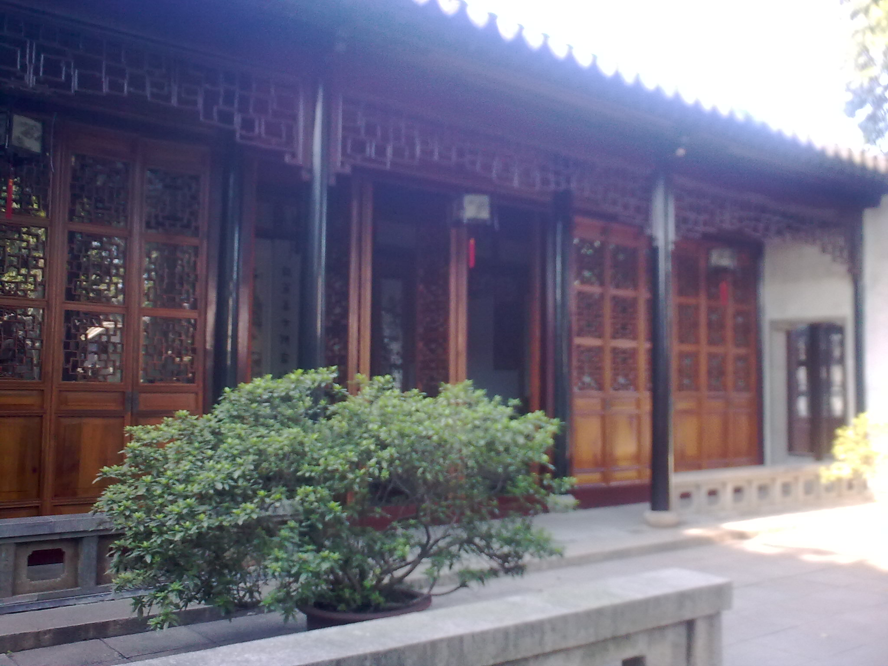
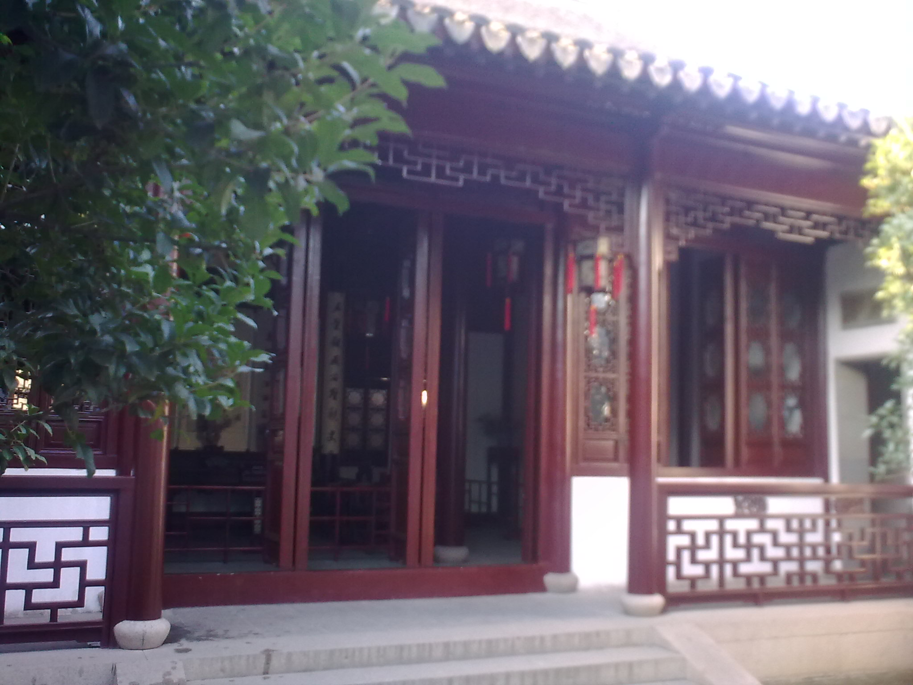

一窗两景
返回耦园耦园分区示意 · 选景看实拍


织帘老屋
西园 · 2009

载酒堂
中宅 · 2009图像来源
两幅摄影：Lamassu Design（Gurdjieff），2009。织帘老屋原作 · 载酒堂原作 · CC BY-SA 3.0。照片未裁切、未改色，仅按屏幕尺寸显示。


左图为本站绘制的分区示意，不标机位；布局参考苏州市园林和绿化管理局。


两幅摄影：Lamassu Design（Gurdjieff），2009。织帘老屋原作 · 载酒堂原作 · CC BY-SA 3.0。照片未裁切、未改色，仅按屏幕尺寸显示。
左图为本站绘制的分区示意，不标机位；布局参考苏州市园林和绿化管理局。